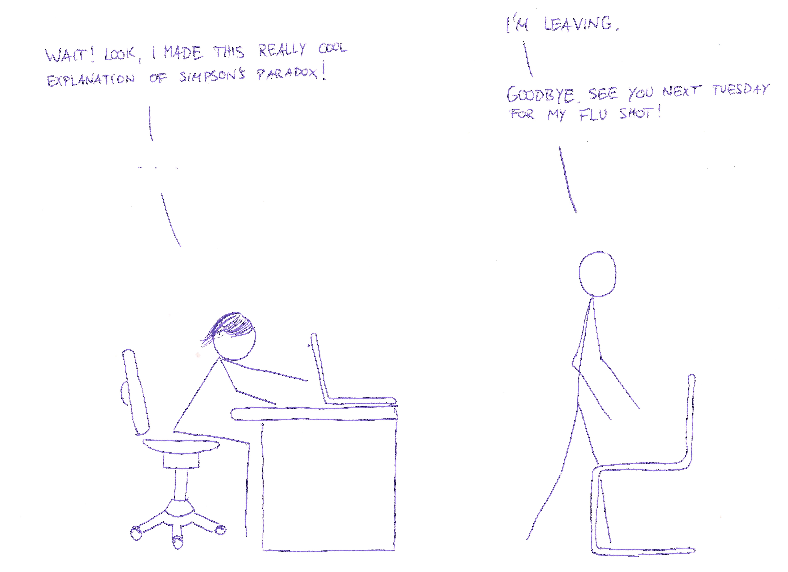

Imagine seeing your doctor and the following dialogue ensues:
So, Simpson's paradox is essentially the (apparent) contradiction between two tables. We have the following success rates of treating kidney stones with two different treatment methods.
| success rate | treatment A | treatment B |
|---|---|---|
| 76.7% | 81.7% |
but after creating subcategories "patients having small kidney stones" and "patients having large kidney stones" (with every patients being in either one), we get
| success rate | treatment A | treatment B |
|---|---|---|
| small stones | 90% | 85% |
| large stones | 70% | 65% |
In this short explanation we will try to answer the following questions.
We start by looking at some patients like a hospital manager would: Featureless objects lacking personality and history. We even abstract away gender, age and their ice cream preferences.
Keep in mind: Every white square is exactly one patient.
For each treatment A and B we consider 240 patients subjected to it. We arrange them nicely in a rectangle 12 by 20, like so:
Now we need to differentiate between small and large kidney stones. We use yellow for patients with small kidney stones and blue for large ones.
Now we need to look at the success rates of the treatments in each of those four subgroups.
We can see the following things (hover over items to see effects):
This is what constitutes Simpson's paradox: Although the success rates in each subpopulation are better for treatment A, the combined success rate is better for treatment B.
We can think about this paradox in the following way. Try to match each bullet point with the according graphical representation.
We can now revisit our original question and answer them:
A study found that sailors who went overboard were more likely to be rescued if they were wearing
We have fixed the rescue probabilities with and without life vest for good and bad weather, so you have only two parameters to fiddle with: The fraction of sailors donning a life jacket in good resp. bad weather. Try to choose those parameters in such a way that the compound ratio of sailors saved without life vests is actually lower than for those with life vests.
| Fraction of sailors donning life vest in good weather | ||
| Rescue probability with life vest in good weather | ||
| Rescue probability with life vest in bad weather |
| Fraction of sailors donning life vest in bad weather | ||
| Rescue probability without life vest in good weather | ||
| Rescue probability without life vest in bad weather |
| Fraction of sailors donning life vest in good weather | ||
| Rescue probability with life vest in good weather | ||
| Rescue probability with life vest in bad weather |
| Fraction of sailors donning life vest in bad weather | ||
| Rescue probability without life vest in good weather | ||
| Rescue probability without life vest in bad weather |
In the last two examples (i.e. kidney stones and sailors in distress), we were confronted with conflicting information: Treatment A was better for each subcategory of kidney stones but treatment B was better overall. Sailors were more likely to be rescued in both good and bad weather if they were wearing a life vest but overall they were less likely to be saved if they wore no life vest.
We had to choose whether to trust the statistics with more information (i.e. specified to a kidney stone size or weather conditions) or the one with ignored information (which ignored subcategories). In both cases it made more sense to trust the statistics with more information: We were interested in individual wellfare, i.e. the recovery probability of each patient and the survival chances of each sailor. As every individual person is in a specific category (kidney stone size or weather condition), we had to choose the statistics which considered this piece of information.
No we need to be careful not to generalize this. We can construct an example of Simpson's paradox where it makes more sense to trust the statistics ignoring some information. We will see how this works: